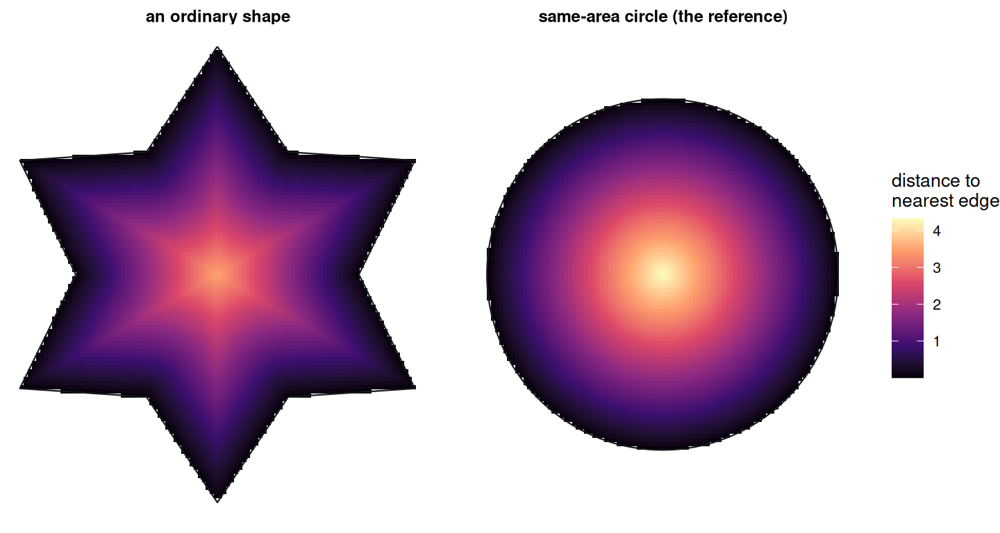

Code
library(shapeindices)
library(sf)
library(ggplot2)
theme_set(theme_minimal(base_size = 11))
theme_gallery <- theme_void(base_size = 10) +
theme(strip.text = element_text(size = 9, face = "bold"))
library(shapeindices)
library(sf)
library(ggplot2)
theme_set(theme_minimal(base_size = 11))
theme_gallery <- theme_void(base_size = 10) +
theme(strip.text = element_text(size = 9, face = "bold"))
make_square <- function(half = 5) st_polygon(list(rbind(
c(-half, -half), c(half, -half), c(half, half), c(-half, half), c(-half, -half))))
make_rectangle <- function(w, h) st_polygon(list(rbind(
c(0, 0), c(w, 0), c(w, h), c(0, h), c(0, 0))))
make_disk <- function(r = 5, n = 60) st_buffer(st_sfc(st_point(c(0, 0))), dist = r, nQuadSegs = n)[[1]]
make_star <- function(n_points, r_outer, r_inner) {
n <- n_points * 2
angles <- seq(pi / 2, pi / 2 + 2 * pi, length.out = n + 1)[1:n]
radii <- rep(c(r_outer, r_inner), n_points)
x <- radii * cos(angles); y <- radii * sin(angles)
st_polygon(list(rbind(cbind(x, y), c(x[1], y[1]))))
}
make_square_with_hole <- function(outer_half = 5, hole_frac = 0.3) {
outer <- rbind(c(-outer_half, -outer_half), c(outer_half, -outer_half),
c(outer_half, outer_half), c(-outer_half, outer_half), c(-outer_half, -outer_half))
hh <- outer_half * sqrt(hole_frac)
hole <- rbind(c(-hh, -hh), c(-hh, hh), c(hh, hh), c(hh, -hh), c(-hh, -hh))
st_polygon(list(outer, hole))
}
make_dumbbell_gap <- function(gap) {
sq1 <- st_polygon(list(rbind(c(0, 0), c(2, 0), c(2, 2), c(0, 2), c(0, 0))))
sq2 <- st_polygon(list(rbind(c(2 + gap, 0), c(4 + gap, 0), c(4 + gap, 2), c(2 + gap, 2), c(2 + gap, 0))))
st_union(st_sfc(sq1, sq2))
}
# n equal-area squares of total area `total_area`, spaced `gap_mult` times
# each square's own side apart - for separating "how many pieces" from
# "how far apart are they" below
make_n_squares <- function(n, total_area = 16, gap_mult = 3) {
side <- sqrt(total_area / n)
centers <- lapply(seq_len(n), function(i) c((i - 1) * side * (1 + gap_mult), 0))
sqs <- lapply(centers, function(c0) st_polygon(list(rbind(
c(c0[1] - side/2, c0[2] - side/2), c(c0[1] + side/2, c0[2] - side/2),
c(c0[1] + side/2, c0[2] + side/2), c(c0[1] - side/2, c0[2] + side/2),
c(c0[1] - side/2, c0[2] - side/2)))))
st_union(st_sfc(sqs))
}
# rasterize a target polygon at a given cell size: keep every grid cell
# whose centre falls inside it, then union the cells - a stand-in for
# vectorizing a raster/classification mask, without needing a raster
# package at all (same construction as vignette("i-understanding-classical-indices"))
rasterize_polygon <- function(target, cell) {
target_sfc <- st_sfc(target)
bb <- st_bbox(target_sfc)
xs <- seq(bb["xmin"] + cell / 2, bb["xmax"], by = cell)
ys <- seq(bb["ymin"] + cell / 2, bb["ymax"], by = cell)
g <- expand.grid(x = xs, y = ys)
pts <- st_as_sf(g, coords = c("x", "y"))
keep <- lengths(st_intersects(pts, target_sfc)) > 0
g <- g[keep, , drop = FALSE]
half <- cell / 2
make_cell <- function(cx, cy) st_polygon(list(rbind(
c(cx - half, cy - half), c(cx + half, cy - half),
c(cx + half, cy + half), c(cx - half, cy + half), c(cx - half, cy - half))))
st_union(st_sfc(mapply(make_cell, g$x, g$y, SIMPLIFY = FALSE)))[[1]]
}depth_index() measures how deep a polygon’s own interior is: how far, on average, its points sit from the nearest edge of the shape. The figure below shows that field directly - brightest at the centre, darkest along the boundary - for an ordinary shape, and for the equal-area circle beside it:

The circle is brighter almost everywhere - more of its interior sits far from any edge - which is exactly the property depth_index() measures: the mean of this field, compared to the same mean on the equal-area circle.
This is not a new idea. Angel, Parent & Civco (2010)1 already define exactly this property, under exactly this name - motivated, in their own account, by how exposed a country’s territory is across its own borders, or how much of a forest’s interior sits safely away from its edge. Their Depth Proposition states it plainly: among shapes of a given area, the circle has the longest average distance from its interior points to its own boundary, and the Depth Index compares a shape’s own average interior-to-boundary distance against that same quantity for its equal-area circle.
They trace the underlying measure to Rohrbach (1890),2 known today only through Frolov’s (1975)3 historical review - the original is not independently available to check. Angel et al. offer no proof of the Depth Proposition - it’s stated as an observation, not derived. The next section gives one.
For a mass distribution with density over polygon and total mass , define the depth field for , and
depth_index() is , where is the same quantity for the most depth-maximising arrangement of that area/mass - a disk when unweighted; concentric rings (densest at the centre) when weighted, exactly as derived in the Weighted reference section below.
Claim: among all measurable shapes of a given area , the disk maximises the unweighted mean depth .
Step 1 - reduce to erosion areas. For a non-negative function, (the standard layer-cake identity). The set is the erosion - the points at least from the boundary. So
and maximising mean depth is the same as maximising erosion area at every depth simultaneously.
Step 2 - bound erosion area via Brunn-Minkowski. By definition of erosion, if then the whole radius- ball around stays inside - so , where is the Minkowski sum and a disk of radius . The 2D Brunn-Minkowski inequality - fully general, no convexity or connectedness assumption on either set - states . Applying it:
so .
Step 3 - the disk achieves this exactly. A disk’s own erosion by is a smaller concentric disk of radius (where ), giving - identical to the bound just derived.
Step 4 - integrate. at every integrates directly to .
No convexity or connectedness assumption was needed anywhere in this argument - Brunn-Minkowski holds for arbitrary measurable sets. That means, unlike some of this package’s other indices, Depth’s boundedness for multi-part shapes and shapes with holes falls out of the same proof, with no separate argument required.
For a disk of radius , a point at distance from the centre has (the nearest boundary point is always radially outward), so the reference reduces to finding over a uniform disk. The ring at radius has circumference , so is how much area sits at each radius - the natural weight for the average:
so
So the reference side of the ratio needs no sampling at all, even though the actual shape’s own does (see “Algorithmic choices” below).
Unlike moment_of_inertia_index()/span_index()/radial_concentration_index(), the depth field is a purely geometric quantity - it depends only on the polygon’s boundary, not on where mass sits. Weighting changes how gets averaged, not the field itself. For a disk, is decreasing in , so by the rearrangement inequality, the arrangement of a fixed multiset of weight values that maximises places the heaviest weights where is largest - i.e. concentric rings, densest at the centre - exactly the same reference construction already implemented for the other three “dispersal from a centre” indices (see “Weighting” under Illustrations below for what this looks like in practice).
Because still only depends on radius (never on which ring a point of mass falls in - the boundary is the same disk regardless of internal density), the weighted reference reduces to a single 1D radial integral - no elliptic integral needed (that complexity in span_index()’s own annulus reference came specifically from pairwise distances; this is single-point, so it should be as tractable as moment_of_inertia_index()’s own weighted reference).
depth_index() needs two things a plain CDT mesh doesn’t already give it “for free”: a representative sample of interior points, and each one’s own distance to the shape’s actual boundary. Both reuse machinery this package already has, but neither is a trivial reuse.
deterministic = TRUE (the default) samples interior points the same way radial_concentration_index() does (vignette("e-understanding-radial-concentration-index")): every CDT triangle is recursively split by medial subdivision, area-adaptively (the mesh’s own largest triangle gets the full 4 levels/256 points; smaller ones need proportionally fewer to reach the same final resolution), and each sub-triangle’s centroid stands in for its own small share of area.
A single point per triangle would be enough if were linear across it - and away from the shape’s own medial axis (where two different boundary edges are equally close), it is: is exactly linear in the direction perpendicular to whichever single edge is nearest, so that triangle’s own centroid already gives its exact average depth. Only triangles straddling the medial axis need subdivision - there, behaves like , a concave “tent” rather than a straight slope, and a bare centroid overestimates the triangle’s true contribution. (This is the opposite direction from radial_concentration_index()’s own reason for subdividing: its field, distance to a single fixed point, is convex everywhere, so a bare centroid underestimates there instead.) The table below shows the size of the effect on a deeply notched star, where the medial axis has a lot of surface area to matter on:
notchy <- st_sfc(make_star(6, 5.64, 0.6), crs = 3857)
prep <- prepare_polygon(notchy)
# naive: one point (the bare centroid) per triangle, no subdivision at all
bnd <- st_boundary(prep$poly)
tc <- st_coordinates(st_centroid(st_geometry(prep$tri)))[, 1:2]
d_naive <- as.numeric(st_distance(st_cast(st_sfc(st_multipoint(tc), crs = st_crs(prep$poly)), "POINT"), bnd))
mean_naive <- sum(prep$tri$area * d_naive) / sum(prep$tri$area)
res_adaptive <- depth_index(notchy, prep = prep)
res_hires <- depth_index(notchy, prep = prep, deterministic = FALSE, n_lines = 200000, seed = 1)
data.frame(
method = c("naive (bare centroid per triangle)", "adaptive subdivision (the package default)",
"Monte Carlo, n = 200,000 (ground truth)"),
mean_depth = c(mean_naive, res_adaptive$mean_depth, res_hires$mean_depth)
) |> knitr::kable(format = "html", digits = 4)| method | mean_depth |
|---|---|
| naive (bare centroid per triangle) | 0.2120 |
| adaptive subdivision (the package default) | 0.1164 |
| Monte Carlo, n = 200,000 (ground truth) | 0.1161 |
The naive, unsubdivided estimate overshoots the true mean depth by roughly 83%, on a shape whose deep notches give its medial axis a lot of surface area to matter on. The package default lands within a fraction of a percent of the 200,000-point Monte Carlo ground truth. deterministic = FALSE remains available as an escape valve for meshes too large even for the adaptive subdivision cloud - it draws n_lines points directly from the weighted density (.sample_weighted_points(), the same routine convexity_index()/span_index()/radial_concentration_index() already use) and skips subdivision entirely.
star8 <- st_sfc(make_star(8, 1, 0.4), crs = 3857)
depth_index(star8)$index[1] 0.4479874
depth_index(star8, deterministic = FALSE, n_lines = 8000, seed = 1)$index[1] 0.4504543Nothing else this package’s other six mesh indices compute needs the polygon’s actual boundary - they only ever need triangle centroids, areas, and (for convexity_index()/span_index()’s deterministic mode) real triangle geometry. Depth is the exception: st_distance() from every point in the cloud to st_boundary(poly_u). On a large, complex real-world polygon this could plausibly be as slow as convexity_index()’s own pairwise cross-product matrix, which is genuinely quadratic and needs its own memory safeguards - so it’s worth knowing how this one actually scales.
Measured against a real 50,424-feature Urban Area boundary (a unioned polygon with 50,611 boundary vertices):
| sample points | time (s) |
|---|---|
| 1000 | 0.04 |
| 5000 | 0.13 |
| 20000 | 0.48 |
Sub-second even at 20,000 points against a 50,000-vertex boundary - confirming st_distance()’s own point-to-line-string implementation scales far better than a naive all-pairs comparison would, and that no chunking or memory-safety ceiling (the kind convexity_index() needs for its genuinely quadratic cross-product) is needed here.
A shape whose true index is exactly 1 (a disk) can still read slightly above 1, from ordinary finite-sample/finite-subdivision noise - the same residual every Monte Carlo or point-cloud estimate in this package carries, and handled the same way: left alone, not clamped.
disk <- st_sfc(make_disk(5, n = 60), crs = 3857)
depth_index(disk)$index # deterministic[1] 1.001851
depth_index(disk, deterministic = FALSE, n_lines = 5000, seed = 1)$index # Monte Carlo[1] 1.007527| shape | name | depth_index | mean_depth | ref_depth |
|---|---|---|---|---|
| square | 0.890 | 1.673 | 1.881 | |
| disk | 1.002 | 1.883 | 1.880 | |
| rect 2:1 | 0.786 | 1.478 | 1.880 | |
| rect 10:1 | 0.411 | 0.772 | 1.879 | |
| hexagon | 0.954 | 1.591 | 1.667 | |
| star (mild) | 0.745 | 1.078 | 1.447 | |
| star (sharp) | 0.194 | 0.116 | 0.599 |
The disk reads just above 1, the expected finite-sampling residual described above, not a modelling error. Elongating the rectangle pulls the index down steadily - a 10:1 rectangle has nowhere in its interior that’s far from some edge, however large its area - and the two stars, same six points with only the inner radius shrinking, separate sharply: depth_index() reacts to spike depth here, unlike width_length_ratio_index() (vignette("i-understanding-classical-indices")), whose bounding rectangle never notices six needle-thin arms replacing six broad ones.
| shape | hole % | depth_index |
|---|---|---|
| 1% | 0.622 | |
| 5% | 0.544 | |
| 10% | 0.489 | |
| 20% | 0.417 | |
| 30% | 0.363 | |
| 50% | 0.277 | |
| 70% | 0.199 |
A hole costs depth_index() far more than its area share: a 10% centred hole already cuts the index nearly in half. That’s not a discretisation artefact - a small centred hole excises exactly the interior points that had the largest to begin with (the ones furthest from the outer edge, right where the hole starts), and gives everything left over near the new hole boundary a much shorter distance to its nearest edge besides. See “Key pathological properties” below for the multi-part comparison, which turns out to work by a different mechanism entirely.
| weighting | name | index |
|---|---|---|
| uniform | 0.448 | |
| concentrated at centre | 0.403 | |
| concentrated at edge | 0.284 |
Edge-weighting scores lowest, as expected - it puts the most mass exactly where is smallest. But centre-weighting scores below the uniform baseline, the same effect radial_concentration_index()’s own weighting demo documents (vignette("e-understanding-radial-concentration-index")) for the identical reason: the reference isn’t fixed, it’s the best possible rearrangement of that same weight histogram into perfect concentric rings. A smooth exponential reweighting concentrates real mass toward the centre, but the star’s actual notches keep the real arrangement from reaching the much tighter target its own reference assumes - so both the actual and the reference mean depth rise, but the reference rises faster. The one comparison guaranteed to hold regardless - centre-weighted beats edge-weighted - does.
is defined purely by an interior point’s distance to the nearest boundary, with no reference to the shape’s own global layout - a ring and a straightened-out strip of the same width give every interior point the same menu of nearby edges to be close to, however differently the two are connected up. A thin annulus and a thin rectangle of the same width and the same total area make this concrete:
| shape | name | area | depth_index |
|---|---|---|---|
| annulus, width 1 | 28.2729 | 0.25 | |
| rectangle, width 1 | 28.2729 | 0.25 |
The two differ in the fourth decimal place - both scoring around 0.250 despite one being a closed ring and the other a straight, open-ended strip. Every other CDT-based index in this package would tell these two apart immediately: closing a strip into a ring changes convexity_index() (a ring is far less convex than a strip), moment_of_inertia_index()/radial_concentration_index()/span_index() (the ring’s own mass sits at a very different distance from any single centre than the strip’s does), and directional_balance_index() (a closed ring has no net bearing at all, a strip clearly does). Depth alone doesn’t move, because none of those global facts - convexity, centre-relative dispersal, net bearing - ever enter its own field .
The multi-part gap sweep already familiar from this package’s other vignettes gives a genuinely different answer here:
| shape | gap | depth_index |
|---|---|---|
| 0.5 | 0.6291 | |
| 2.0 | 0.6291 | |
| 5.0 | 0.6291 | |
| 20.0 | 0.6291 |
Every value is identical - not approximately, to floating-point precision - regardless of how far apart the two squares sit. That’s the direct payoff of being purely local: each square’s own interior points have the same nearest-boundary distances whether the other square is one unit away or a hundred. radial_concentration_index()’s own “Where this fits” section (vignette("e-understanding-radial-concentration-index")) shows the opposite behaviour on the identical shape - it falls without bound as the gap widens, because mean distance to a shared reference centre keeps growing.
That is not the same as saying depth is blind to fragmentation altogether, though. Splitting one solid shape into more, smaller separate pieces of the same combined area does lower the index, even at a generous, fixed separation:
| shape | n parts | depth_index |
|---|---|---|
| 1 | 0.890 | |
| 2 | 0.629 | |
| 4 | 0.445 | |
| 8 | 0.315 | |
| 16 | 0.222 |
The mechanism is the reference, not the separation: ref_depth is fixed by the combined area alone ( for the equal-area circle of all the pieces together), while the actual mean depth is dominated by each piece’s own, individually much smaller, characteristic width once that combined area is cut into more pieces. Four equal squares of a given total area are each half the linear size of one big square holding all of it, and depth scales with linear size - so the actual value falls even though every piece, and the gap between them, is otherwise exactly as “healthy” as before. Depth reacts to how big each connected piece is relative to the whole, never to how far apart the pieces are placed.
vignette("i-understanding-classical-indices") documents polsby_popper_index() as the one index in this package’s classical-metrics set that never converges under a rasterized (stairstepped) boundary - perimeter itself doesn’t converge to the true curve length as the pixel grid gets finer, a real fact about approximating curves with axis-aligned steps. Depth doesn’t use perimeter at all, so it’s worth checking directly whether it inherits the same problem some other way:
true_circle <- make_disk(8, 30)
cells <- c(4, 1, 0.25)
tbl_px <- do.call(rbind, c(
list(data.frame(resolution = "true (unpixelated)",
depth_index = suppressWarnings(depth_index(st_sfc(true_circle))$index))),
lapply(cells, function(cell) {
g <- st_sfc(rasterize_polygon(true_circle, cell))
data.frame(resolution = sprintf("cell = %.2f", cell), depth_index = suppressWarnings(depth_index(g)$index))
})
))
knitr::kable(format = "html", tbl_px, digits = 3, row.names = FALSE)| resolution | depth_index |
|---|---|
| true (unpixelated) | 1.001 |
| cell = 4.00 | 0.734 |
| cell = 1.00 | 0.903 |
| cell = 0.25 | 0.962 |
Depth converges cleanly back toward 1 as the pixel grid gets finer, the same behaviour every classical metric except polsby_popper_index() shows. That makes sense given the mechanism above: pixelation noise is confined to a thin strip right along the boundary, and its effect on an area-weighted mean shrinks along with that strip’s own share of total area - unlike perimeter, which the staircase effect inflates and keeps inflated regardless of how fine the steps get.
depth_index() looks like it belongs to this package’s “dispersal from a centre” family - moment_of_inertia_index(), span_index(), radial_concentration_index() (vignette("c-understanding-moment-of-inertia-index"), vignette("d-understanding-span-index"), vignette("e-understanding-radial-concentration-index")) - since all four compare a shape to an equal-area (or equal-mass) reference and read 1 exactly when the shape matches it. But it asks a structurally different question: those three all measure distance to or between interior points themselves (to the centroid, between two random points, to the geometric median); depth measures distance from an interior point to the boundary, with no interior reference point anywhere in its own definition. “Key pathological properties” above makes the practical consequence concrete: all three siblings react to how far apart a shape’s separate pieces are pulled, without limit in radial_concentration_index()’s own case; depth doesn’t react to separation at all, only to each piece’s own size relative to the whole.
It’s also the closest thing in this package to Girth, one of the ten compactness properties Angel, Parent & Civco (2010) survey alongside Depth itself: the inscribed circle radius, , the same distance-transform field’s maximum rather than its mean. A maximum collapses to whichever single point happens to be deepest - blind to a hole or a second part anywhere else in the shape, and badly discontinuous under small perturbations near that one point - which is why this package implements Depth but not Girth. Reading the same field through a mean instead of a max is exactly why Depth is bounded via the same Brunn-Minkowski argument for holes and multiple parts alike, with no special-case reasoning needed the way a max-based property would require.
Finally, it’s worth distinguishing from this package’s boundary/hull-based classical metrics (vignette("i-understanding-classical-indices")), which it superficially resembles - both compare a polygon to a reference circle. reock_index() compares area to the minimum bounding circle (an external, enclosing comparison that never looks at any interior point); exchange_index() compares overlap with a circle placed at the centroid (a single global placement, not a distribution over the interior). Depth is the only one of the three that’s a genuine interior statistic, averaged pointwise over the whole shape - which is exactly what makes it converge cleanly under boundary pixelation where a perimeter-based measure like polsby_popper_index() does not (see above), and exactly why it needs a CDT mesh to sample from in the first place, unlike any of the three classical metrics it’s being compared to here.
A systematic empirical comparison against the other twelve indices, in the style of vignette("j-nc-counties-comparison"), is a natural follow-up once depth has had time to settle - not attempted here.
depth_index() compares the mean distance from every interior point to the shape’s own nearest boundary point against the same quantity for an equal-area circle (unweighted) or a concentric annulus densest at the centre (weighted) - both provably the maximum achievable mean depth for that area/mass, the opposite direction from every other reference shape in this package, which is always a minimum.radial_concentration_index()’s own area-adaptive medial subdivision, but for a different reason: is a minimum of convex functions, so it’s exactly linear (zero subdivision bias) away from the medial axis and concave right on it - the opposite bias direction from radial_concentration_index()’s own convex field (see “Algorithmic choices” above).st_distance() from a point cloud to the polygon’s actual boundary - scales safely on real, complex boundaries (confirmed against a 50,000-vertex polygon), unlike convexity_index()’s genuinely quadratic cross-product.polsby_popper_index() (vignette("i-understanding-classical-indices")) - pixelation noise is confined to a thin near-boundary strip, and an area-weighted mean shrinks that strip’s influence as the pixel grid refines, where a perimeter sum does not.